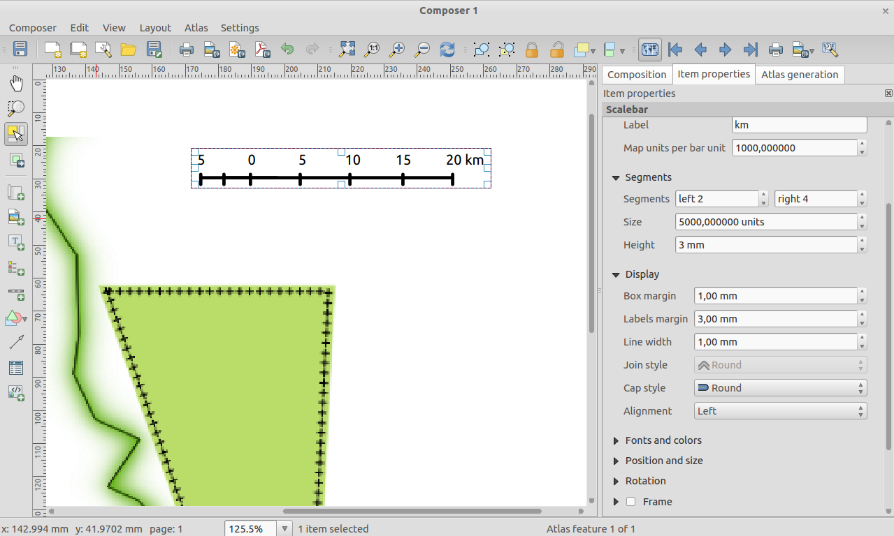

Список змін для QGIS 2.4¶
Список змін у QGIS 2.4.0. Основна увага у цьому випуску приділялась вдосконаленню та продуктивності — ми реалізували багато нових можливостей, щоб зробити інтерфейс більш зручним та легким у використанні. Значна увага приділялась редактору макетів (для створення друкованих карт), щоб перетворити його на повноцінну платформу для створення красивих картографічних продуктів.
Новий функціонал може призводити до появи нових помилок — якщо ви знайшли помилку, будь ласка, повідомте про неї у багтрекері QGIS.
Ми хочемо подякувати всім розробникам, авторам документації, тестувальникам та іншим людям, які добровільно витрачали свій час та сили.
From the QGIS community we hope you enjoy this release! If you wish to donate time, money or otherwise get involved in making QGIS more awesome, please wander along to qgis.org and lend a hand!
І нарешті ми хочемо подякувати нашим офіційним спонсорам за їх безцінну підтримку:
- ЗОЛОТИЙ спонсор: Asia Air Survey, Японія
- СРІБНИЙ спонсор G.A.I.A. mbH, Germany
- СРІБНИЙ спонсор: State of Vorarlberg, Австрія
- БРОНЗОВИЙ спонсор: www.molitec.it, Італія
- БРОНЗОВИЙ спонсор: www.argusoft.de, Німеччина
- БРОНЗОВИЙ спонсор: www.openrunner.com, Франція
- БРОНЗОВИЙ спонсор: www.eschenlaub.de, Німеччина
A current list of donors who have made financial contributions large and small to the project can be seen on our donors list.
If you would like to make a donation or sponsor our project, please visit our sponsorship page for details. QGIS is Free software and you are under no obligation to do so. Sponsoring QGIS helps us to fund our six monthly developer meetings, maintain project infrastructure and fund bug fixing efforts.
- Загальне
- Генерація імен каналів з NetCDF EXTRA_DIM
- Використання масштабу та зсуву для растрових даних
- Панель калькулятора в таблиці атрибутів
- Режими попереднього перегляду карти та редактора макетів
- Файли шарів QGIS QLR
- Нові функції у редакторі виразів
- Копіювання, вставка та перетягування кольорів
- Багатопотокова візуалізація
- Підписи
- Редактор макетів
- Плаґіни
- Символіка
Загальне¶
Генерація імен каналів з NetCDF EXTRA_DIM¶
Формат NetCDF містить розширену інформацію про виміри, ця інформація зберігається у метаданих кожного каналу і може використовуватися для детального опису каналів. Наприклад, канали файлу NetCDF містять інформацію про температуру на певній глибині. Для користувачів набагато зручніше вибирати потрібний канал, спираючись на дані про глибину, а не за номером каналу.

Використання масштабу та зсуву для растрових даних¶
Деякі растрові формати зберігають дані як цілі числа з відповідним масштабом та зсувом у метаданих. Ці відомості використовуються для отримання правильних даних. QGIS тепер використовує цю інформацію та надає користувачу правильні відомості.

Панель калькулятора в таблиці атрибутів¶
Спеціально для тих, хто часто працює з таблицею атрибутів та створює нові поля. Панель калькулятора дозволяє швидко оновлювати значення атрибутів.

Режими попереднього перегляду карти та редактора макетів¶
У QGIS 2.4 з’явилась інноваційна можливість — попередній перегляд карти у відтінках сірого та різних режимах дальтонізму. Завдяки цьому ви можете отримати уявлення про те, як буде виглядати ваша карта для людей з дальтонізмом або після другу на чорно-білому принтері. Дізнатися більше про цю можливість можна тут.

Файли шарів QGIS QLR¶
Реалізовано підтримку файлів шарів QGIS або просто QLR (див. http://nathanw.net/2014/03/12/qgis-qlr/). QLR це файл, що вказує на дані та містить всю інформацію про оздоблення та інші настройки. Ви можете відкрити цей файл і всі інше буде зроблено автоматично. QLR стануть у нагоді, коли необхідно додати один і той же шар у декілька проектів зі збереженням стилів та інших настройок.
Нові функції у редакторі виразів¶
У редактор виразів додано декілька нових функцій.
- обмежувальна рамка (bounds)
- ширина та висота обмежувальної рамки (bounds_width/bounds_height)
- мінімальна та максимальна координата X або Y (xmin/xmax/ymin/ymax)
- функція wordwrap, яка повертає рядок, розбитий на задане максимальне або мінімальне число символів

Копіювання, вставка та перетягування кольорів¶
Тепер можна копіювати, вставляти та перетягувати кольори між будь-якими віджетами вибору кольору в QGIS. Детальніше про цю можливість читайте у цьому дописі. Крім того, підтримується вставка шістнадцяткових кодів та рядків RGB, що дозволяє імпортувати кольори з інших програм.

Багатопотокова візуалізація¶
QGIS тепер підтримує багатопотокову візуалізацію! Це означає, що під час відображення карти QGIS розподіляє роботу між всіма доступними ядрами процесора, що робить процес більш ефективним та чутливим. Під чутливістю ми маємо на увазі те, що вам більше не треба чекати поки карту буде оновлено перш ніж змінювати масштаб або виконувати переміщення. Перегляньте цей допис, щоб отримати більше інформації про багатопотокову візуалізацію.

Підписи¶
Багаторазове підписування об’єктів¶
Довгі лінії (такі як горизонталі або дороги) тепер можна підписувати послідовно, з вказаним інтервалом. Інтервал задається у міліметрах або одиницях карти.

Редактор макетів¶
Вдосконалений елемент «зображення»¶
Елемент «зображення» тепер підтримує вирази, завдяки цьому його можна використовувати для друку послідовностей карт (атласів). Також можна вказати режим обрізання (масштабувати, обрізати, розтягнути тощо) зображення по відношенню до розмірів його рамки. Крім того, з’явилась можливість вказувати розміщення зображення відносно рамки.

Режим «вказані масштаби» для атласів¶
Під час підготовки атласів тепер можна вибрати режим «вказані масштаби». В цьому режимі карта буде використовувати найбільш відповідний масштаб зі списку вказаних.

Вдосконалена таблиця атрибутів¶
Значно покращено та вдосконалено відображення таблиць атрибутів у редакторі макетів:
- з’явилась можливість перевпорядкування стовпчиків таблиці
- реалізовано підтримку стовпчиків на основі виразів
- тепер вирівнювання стовпчиків вказується індивідуально, також можна окремо налаштувати вирівнювання заголовків
- вміст таблиці можна фільтрувати з використанням виразів

Інші вдосконалення¶
Зроблено багато інших вдосконалень, які роблять роботу з редактором макетів більш зручною:
- можливість встановити охоплення поточної карти в якості охоплення основної карти
- підтримка експорту в SVG з розбиттям на шари
- можливість настойки стиків та кінців масштабних лінійок
- можливість настойки стиків рамок елементів

Вдосконалений елемент HTML¶
Нова кнопка [Додати фрейм] дозволяє створювати зв’язані елементи. Вдосконалено алгоритм розбиття на сторінки.

Плаґіни¶
Плаґін пошуку в каталогах CSW¶
Плаґін MetaSearch дозволяє шукати дані у каталогах метаданих, що підтримують стандарт OGC CSW (Catalogue Service for Web).

Символіка¶
Зафарбовування контурів¶
Новий режим зафарбовування, який дозволяє зафарбовувати полігони градієнтом, що розходиться від межі в напрямку середини полігону. Детальніше тут.

Можливість зсунути маркерну лінію¶
З’явилась можливість вказати зсув маркерної лінії від початку основної лінії. Якщо для маркерної лінії використовується режим «перша вершина» або «остання вершина», тоді зсув вказує як далеко від вершини буде розміщено маркер.

Новий рендерер «інвертований полігон»¶
Новий режим зафарбовування дозволяє налаштувати стиль, який буде використовуватися для всіх об’єктів за межами ваших полігонів. Цей режим може використовуватися для виділення областей або створення картографічних маск.
Примітка: нова версія плаґіна Mask дозволяє легко створювати шари масок, підписувати об’єкти, які знаходяться у цій області та автоматично генерувати маску під час друку атласів.

Збереження стилів у базі SpatiaLite¶
В одній з попередніх версій QGIS було реалізовано можливість зберігання стилів у базі PostgreSQL. Тепер така можливість існує і для SpatiaLite. Завдяки цьому значно спрощується обмін даними. Відео-огляд можна знайти на цій сторінці http://pvanb.wordpress.com/2014/05/15/saving-layer-styles-to-your-spatialite-database/.